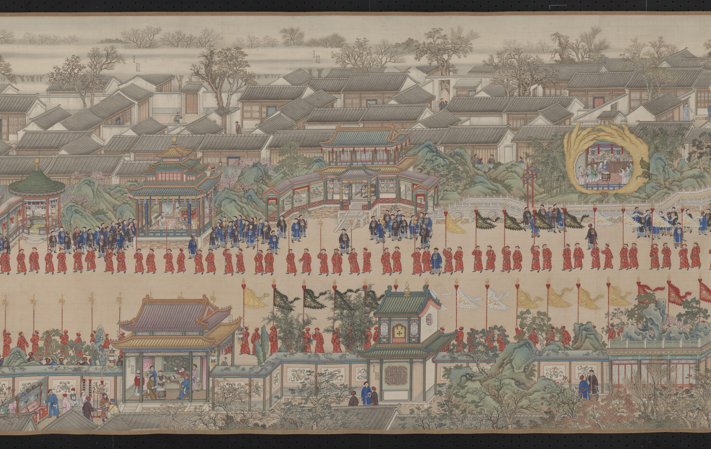
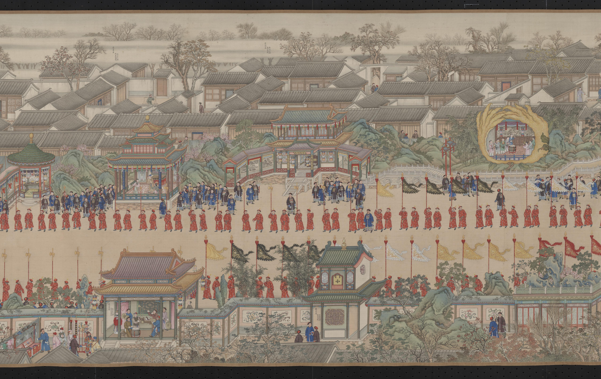

拖曳移動，滾輪或雙指縮放。凝神由你控制，沿着畫面慢慢找。小地圖的方框代表目前畫面，可拖動或點選位置。
展開全卷
官方原生清晰段落
近看與互動位於官方原生清晰段落；完整第三卷另用公開構圖。頭像與收藏圖樣為原畫衍生插圖，原畫為準；人物短句是遊戲虛構對白。
方向鍵移動畫面，＋／− 縮放。Tab 選取眼前人物與細節，Enter 點選，Escape 收起閱讀介面。收藏每類記一次，重新尋人仍保留。
在人群中聽樂康衢駢慶 · 原畫局部